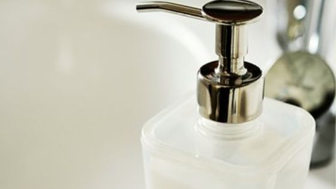

評価・評判・口コミはどんなのがある？
NULC 薬用スリープロテクトジェル（オールインワンジェル）

スキンケア用品。買ってから失敗したくない・・
人が使っている使用感を知りたい！
気持ちめちゃくちゃわかります。
特にインターネットで買い物をするときは必ず確認しますよね。
私も物凄く気にするので「評価・評判・口コミ・使用感」をまとめました。
スリープロテクトジェルのInstagramでの評価
やっぱりInstagramはきらきらしているレビューが多いですね。
スリープロテクトジェルのTwitterでの評判
#NALC #薬用スリープロテクトジェル を使ってみました！#オールインワンジェル で、#美白 #ニキビ #乾燥小じわ などにアプローチ。みずみずしいテクスチャーのジェルです。お肌に優しい処方なので、 #敏感肌 の方にもおススメです！しっとりするし、私も乾燥が気にならなくなったのでお気に入りです！ pic.twitter.com/BWxSK4z2mt
— 望里 (@MisayanPee) December 12, 2019
先日NALCさんから頂いた薬用スリープロテクトジェル、
— Hatune (@Hatune77757412) December 7, 2019
ようやく使ってみました。高保湿を謳っているだけあって、
塗って数時間経っても肌がうるうるもちもち状態！ジェルを
つけたてのような感触が続いていて、驚き。
日焼け止めに続く大ヒット商品な予感です。#NALC#薬用スリープロテクトジェル pic.twitter.com/d8tjnDAax4
NALCのツイッターキャンペーンで当たったスリープロテクトジェルもいままでの皮脂の状態だったら絶対ギットギトになってただろうなと思うけど今の乾燥する肌にはちょうどいい🥺
— まこぴーーーーーーーーーーーーー (@mkpddd) November 27, 2019
ただ使用目安のさくらんぼ大はちょっと多いかな🤔
Twitterは具体的なレビューが聞けていいですね。
私個人の意見ではさくらんぼ大の大きさで丁度良かったのですが、ちょっと多いとの意見がありますね。
スリープロテクトジェルのメディアの口コミ
パッケージが、本当にスタイリッシュでオシャレです！！！
一つで、化粧水、乳液、美容液、クリーム、の4役を果たします。
無臭なので、香りが苦手な人にオススメ！！！
デザインも、香りが無いのも、併せて、
男女とも使用できそう。
さっぱり系なのかと思ったら、
予想以上にもっちりしていました。
そのわりに、チューブからも出しやすくて○
引用元：アットコスメ
1本で化粧水・乳液・美容液・クリームの役目を果たしてくれる、時短に取り入れたいオールインワンを口コミさせていただきます！
みずみずしいジェルがお肌にスッと馴染んでベタつかないので、忙しい朝でもすぐにメイクができて、毎日心地よく使えます。
仕事で遅くなった日の夜もこれひとつでしっかりお手入れができて、翌朝モチモチのお肌になります。
お肌に優しく刺激なく使えるのも魅力的です。
子育てと仕事で毎日忙しいけどちゃんとケアしたいので、とてもありがたい商品です(^_^)
引用元：LIPS
丁寧な口コミが多かったです。チューブから出しやすいというのは目の付け所が鋭くて関心しちゃいました。
まとめ
色々なところから評判や口コミを集めましたがどこへ行っても満足しているレビューしか見つかりませんでした。（2019/12/14)
参考になったなら嬉しいです♪♪
- NULC 薬用スリープロテクトジェル（オールインワンジェル）トップ
- NULC 薬用スリープロテクトジェル（オールインワンジェル）の効果
- NULC 薬用スリープロテクトジェル（オールインワンジェル）の使い方
- NULC 薬用スリープロテクトジェル（オールインワンジェル）の使うタイミング
- NULC 薬用スリープロテクトジェル（オールインワンジェル）は乾燥肌でも大丈夫？
- NULC 薬用スリープロテクトジェル（オールインワンジェル）の評価・評判・口コミ
- NULC 薬用スリープロテクトジェル（オールインワンジェル）の値段は安い？
- NULC 薬用スリープロテクトジェル（オールインワンジェル）と人気のジェルを比較
- NULC 薬用スリープロテクトジェル（オールインワンジェル）は子供にも使える？
- NULC 薬用スリープロテクトジェル（オールインワンジェル）は無料でお試しはできる？
- NULC 薬用スリープロテクトジェル（オールインワンジェル）の会社ナルク（NULC）とは？